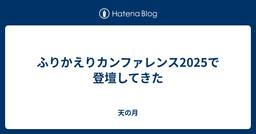

天の月
https://aki-m.hatenadiary.com/
ソフトウェア開発をしていく上での悩み, 考えたこと, 学びを書いてきます(たまに関係ない雑記も)
フィード

スクラムフェス金沢2025の打ち合わせ(18回目)に参加してきた
天の月
aki-m.hatenadiary.com スクラムフェス金沢2025に向けた準備をしてきたので、会の様子を書いていこうと思います。 下見結果の報告 Tシャツアンケート 採択メールの文面を考える 採択 下見結果の報告 プロジェクターは実は借りないといけないということが分かった(デフォルトでは1つの会場にしかついていなかった)のと、ややネットワークが弱めな課題はあるもののオンライン配信も普通にできそうではあるという点が分かったという話がありました。 Tシャツアンケート 採択と同時にTシャツのアンケートを送る必要があるのですがこれができていなかったので作成していきました。とはいえ昨年と同じなのでそ…
1時間前

アジャイルカフェ@オンライン 第71回に参加してきた
天の月
https://agile-studio.connpass.com/event/350915/ こちらのイベントに参加してきたので、会の様子と感想を書いていこうと思います。 会の概要 会の様子 自己組織化された状態とは？ 自己組織化されたスクラムイベントは？ POや開発者本人にとって自己組織化の利点は？ スクラムマスターのできること 会全体を通した感想 会の概要 アジャイル実践者から寄せられている悩みに対して、仁さん家永さん木下さんのアジャイルコーチのお三方が回答をしていくイベントです。今回のテーマは、「チームが自己組織化するために、スクラムマスターができることとは？」でした。 会の様子 自己…
1日前

DevOpsDays Tokyo2025で登壇してきた
天の月
confengine.com www.devopsdaystokyo.org DevOpsDays Tokyo2025で登壇してきたので、ふりかえりをしていこうと思います。 準備 発表中 発表後 準備 まず、DevOpsDays Tokyoでは実践の話を大切にされているということから、あんまり書籍的なベストプラクティスの話とかではなく、素朴に思えるかもしれないし聞いたらなんだそんなことかと思えるかもしれないけれども自分がやった話をしたいなと思いました。続いて、あんまりポイントを詰め込みすぎないような発表にしたいなというのを思いました。いつもは割とポイントを詰め込みがちな傾向があるのですがそれを…
2日前

yr-learning Vol63に参加してきた
天の月
yr-learning Vol63 - connpass こちらのイベントに参加してきたので、会の様子と感想を書いていこうと思います。 交代時のマナ変化のテストを書く マナ上限値まで溜まるテストを書く 角さん 交代時のマナ変化のテストを書く まずは交代したときにマナがチャージされるというテストを書きました。特に詰まることなく自然とRed/Green/Refactorのサイクルを回すことができました。 マナ上限値まで溜まるテストを書く マナ上限値を越した分はチャージされないというテストを書いていきました。こちらも問題なくRed/Green/Refactorのサイクルを回すことはできたのですが、R…
3日前

大人のソフトウェアテスト雑談会 #260【カツオ】に参加してきた
天の月
https://ost-zatu.connpass.com/event/351554/ 今週もテストの街葛飾に行ってきたので、会の様子と感想を書いていこうと思います。 LDAP DevOpsDays Tokyo スクラムフェス金沢のオンラインOST 全体を通した感想 LDAP 認証といったらAuth0とか言われる人が多いですが、そこは黙ってLDAPを使ったほうがいい、Auth0は甘えだという話が出ていました。(区長のお墨付きだということです) ディレクトリ構造を持っていて軽量なため扱いやすいそうですが、正直このWeb全盛期の時代で何をどう使うのかがわからないという意見もありました笑 また、認証…
4日前

スクラム祭りの打ち合わせ(33回目)をしてきた
天の月
aki-m.hatenadiary.com こちらの打ち合わせをしてきたので、会の様子と感想を書いていこうと思います。 XP祭りと同時開催話の共有 キャッシュ・フローとスポンサー HP変更 XP祭りと同時開催話の共有 前回運営ミーティングが終わった後に1時くらいまで話をしていたので、その内容を共有しました。結論としては、XP祭りと同時にやるのかどうかは自分たちが考えるのではなくXP祭りに決めてもらえればいいんじゃないか？ということで、自分たちは淡々と開催に向けた準備を進めていけばいいという話をしました。 個人的にはXP祭りとの調整だったり説明だったりが大変なので、それはそれでいいかなという腹落…
5日前

スクラムフェス金沢2025の打ち合わせ(17回目)に参加してきた
天の月
aki-m.hatenadiary.com スクラムフェス金沢2025に向けた準備をしてきたので、会の様子を書いていこうと思います。 採択会議 採択会議 今日もメインではずっと採択会議をしていきました。もともとは今日Accept通知を送ることができればいいよね、という話をしていたのですが、今日はタイムテーブルも含めて一旦確定させてあとは来週最終確認すればいいよね、というところまでいきました。 まず、前回参加できていなかったメンバーの推しセッションを反映させていきました。今回は会場を多めに取っているということもあったので、何かと入れ替えということには結果的にならず、セッションを追加するような形に…
6日前

ふりかえりカンファレンス2025で登壇してきた
天の月
retrospective.connpass.com ふりかえりカンファレンスで登壇してきたのでそのふりかえりです。 準備 当日 準備 5分のLT久々だなあと思っていてふりかえっていたら、なんと初めて登壇したふりかえりカンファレンス2021以来で、驚きました。前のときは5分とはいえ結構しっかり準備をしていたのですが、その結果だいぶ時間が厳しくなってしまったので、今回はほどほどに5分くらいになる発表を準備しようと思っていました。 ただ、話すことをまとめていると内容的にどう考えても5分では終わらず、20分くらいの発表になってしまい、メッセージとかも含めて色々考え直しをすることにしました。具体的には…
7日前

Effective TypeScript - Forkwell Library #89に参加してきた
天の月
https://forkwell.connpass.com/event/350245/ こちらのイベントに参加してきたので、会の様子と感想を書いていこうと思います。 会の概要 会の様子 今村さんの講演 書籍概要 推し1 : 項目9(型アノテーションを型アサーションより優先的に使用する) 推し2 : 項目25(進化する型を理解する) 推し3 : 項目29(有効な状態のみ表現する型を作る) 推し4 : 項目48(健全性の罠を回避する) 推し5 : 項目53(条件型のユニオンでの分配を制御する) 推し6 : 項目62(レストパラメータとタプル型を使って、可変長引数の関数をモデリングする) 推し7 :…
8日前
NTTデータに学ぶ！大規模アジャイル開発を成功に導くための勘所に参加してきた
天の月
https://findy.connpass.com/event/347899/ こちらのイベントに参加してきたので、会の様子と感想を書いていこうと思います。 会の概要 会の様子 大規模アジャイル開発のリアル Q&A 機能連結はどのような粒度でテストをするのか？ ツールは何を使うのか？ PMOは必要なのか？ なぜアジャイルではなく大規模アジャイルなのか？ WF開発ではなぜスケジュールはフレキシブルだと言えるのか？ 大規模アジャイルでのコミュニケーションの重要性はWFでも言える話ではないか？ 全体を通した感想 会の概要 以下、イベントページから引用です。 不確実性や社会的変化の大きい現代のビジネ…
9日前
yr-learning Vol62に参加してきた
天の月
yr-learning Vol62 - connpass こちらのイベントに参加してきたので、会の様子と感想を書いていこうと思います。 雑談 コードを書く 雑談 いつもどおりゆるゆると雑談からスタートしました。 みんなここ最近忙しそうという話からどれくらい忙しいのかの話をしたり、直近やっている仕事の話をしたり、コンサルとSIerの違いみたいなところを話したり色々やっていきました。 コードを書く github.com github.com github.com まずこちらのコードを書いていきました。まず、ライフのテストをしているのにもかかわらず勝利条件の判定を実質テストしまっている部分があったの…
10日前
大人のソフトウェアテスト雑談会 #259【糖分】に参加してきた
天の月
https://ost-zatu.connpass.com/event/351552/ 今週もテストの街葛飾に行ってきたので、会の様子と感想を書いていこうと思います。 色々な業界のテスト オタク Times 文化 全体を通した感想 色々な業界のテスト 人の命がかかっているプロダクトのテストは話が変わってくるよねという話がありつつ、ゲーム業界のテストもなかなかユニークで面白いという話が出ていました。 ゲームは状態が他とは比べて多いし、COMをどういう風にテストさせるのかを考える必要があったりとか、常にCPUがいる環境だとかで特殊なので、大変さはあるだろうけどやってみたいということでした。 オタク…
11日前
スクラム祭りの打ち合わせ(32回目)をしてきた
天の月
aki-m.hatenadiary.com こちらの打ち合わせをしてきたので、会の様子と感想を書いていこうと思います。 ホームページ更新 スクラム祭りの開催日時 ホームページ更新 ホームページでXP祭りと同時開催すると宣言していたところを更新しておきました。その他にも、以前いくつか後回しにしていた部分を確認してみたのですが、時間が経ったからか意外と修正する必要がある箇所がなく(どこを修正したらいいのかわからない箇所が多く)、XP祭りと同時開催すると宣言していた箇所だけの修正にとどまりました。 また、地味にSEOの効果があってスクラム祭りが上位検索でヒットするようになっていたのが感動しました。(…
12日前
アジャイルカフェ@オンライン 第70回に参加してきた
天の月
agile-studio.connpass.com こちらのイベントに参加してきたので、会の様子と感想を書いていこうと思います。 会の概要 会の様子 アジャイルコーチは楽しいのか？ アジャイルだからこそ楽しかったこと アジャイルだからこそ楽しくなかったこと 会全体を通した感想 会の概要 アジャイル実践者から寄せられている悩みに対して、じんさんと天野さんと木下さんの3人が答えていくイベントです。 今日のテーマは、「アジャイルは楽しいのか？」でした。 会の様子 アジャイルコーチは楽しいのか？ 最初に天野さんから話があり、個人で勝手にアジャイル開発を導入していたときには楽しいと思っていたけれども、ア…
13日前
スクラムフェス金沢2025の打ち合わせ(16回目)に参加してきた
天の月
aki-m.hatenadiary.com スクラムフェス金沢2025に向けた準備をしてきたので、会の様子を書いていこうと思います。(21:00-22:00までの参加でした) キャッシュ・フロー更新 ポスター 採択会議 キャッシュ・フロー更新 チケットが少し売れていたのでその分を反映させました。また、スタッフのお金が何円くらいなのかが適当だった(何人来るのか分からなかった)ので、これくらいの人なら来るだろうというのを見積もって反映させました。 ポスター 前回スポンサーさんが載っているXバナーが一つの会場にしかないという状態だったので、ポスターを追加で発注することにしました、 最低でも3トラック…
14日前
Hey Say アジャCITYの読書会(3回目)に参加してきた
天の月
表題のイベントに参加してきたので、会の様子を書いていきます。 本音と建前 ビジョン 時代の変化 教育 カリスマ性 本音と建前 今読んでいる書籍(ホンダ流ワイガヤのすすめ)で言う建前の方にどうしても意思決定は偏りがちだなあという話をしていきました。そっちのほうが尊重されやすいし、数字偏重主義と言われればそれまでなんだけれども、あんまり個人の感性が出ていい場面というのが特にtoBだと少ない気がするという意見がありました。 一方で、スプリントレビューやユーザーインタビューをはじめ、リアルなユーザーの声を聞くみたいなのはやられがちですし、そこではあんまりアンケートだとか数字だとかよりも生の声を大切にし…
15日前
スクラムフェス新潟2025で登壇してきます
天の月
confengine.com こちらのプロポーザルがスクラムフェス新潟2025で採択されたので今日はその告知です。 概要 Acceptされたときの心境 発表への意気込み 概要 生成AIの目まぐるしい発展により、システム機能の一部に生成AIを活用するということは珍しくなくなってきました。 しかし、生成AIは出力が安定しなかったり、中身がブラックボックス化されているといった特徴を有するため、これらの機能をテストするための知見はまだ研究途中であり、実例としても少ない状況です。 そこで、本セッションでは、自身が関与した生成AIを活用したシステム構築のプロジェクトにおいて、どのようにテスト計画を立ててテ…
16日前
yr-learning Vol61に参加してきた
天の月
https://yr-camp.connpass.com/event/351199/ こちらのイベントに久しぶりに？参加してきたので、会の様子と感想を書いていこうと思います。 軽いふりかえり ペアプロ 軽いふりかえり 今回久しぶりの集まりだったということもあり、最初は簡単にふりかえりをしていきました。久しぶりにコードを見ると良く分からなくなっていて、それがいい学びになっているという話をしたり、前回何をしていて次に何をするかがコメントだけだとわからないという話をしていきました。 また、4ヶ月くらいかけてどれくらい進んでいるのかを確認し、実際にコードを書いている時間は1回のイベントあたり30分くら…
17日前
大人のソフトウェアテスト雑談会 #258【しびれ】に参加してきた
天の月
ost-zatu.connpass.com 今週もテストの街葛飾に行ってきたので、会の様子と感想を書いていこうと思いまし。 語る街葛飾 語る街葛飾 直近あったイベントに関して、オンライン区長を中心に物申していました。以下のような話が出ていました。 同じような話が多くなった(同じことを異なるツールで説明していたり同じHowを言葉を変えて繰り返しているだけ)ような印象があった すごい表面的な話が多くてそこだけ話されてもなんともいえないという気持ちになった リグレッションテストを何でもかんでもやるのはテスト分析やテスト設計ができていないことを明らかにしているだけな気がする テスト項目数のグラフからテ…
18日前
スクラム祭りの打ち合わせ(31回目)をしてきた
天の月
aki-m.hatenadiary.com こちらの打ち合わせをしてきたので、会の様子と感想を書いていこうと思います。 スポンサーの確認&キャッシュ・フローの更新 地域トラックへの依頼状況確認 XP祭りとの同時開催案 スポンサーの確認&キャッシュ・フローの更新 スポンサー募集があるかを確認&キャッシュ・フローの更新があるかを確認していきました。(今回は特に更新はなし) 地域トラックへの依頼状況確認 前回のミーティングで地域トラックに依頼をしたのですが、そこで依頼したことがうまく伝わっていそうかな？というのを見ていきました。 結果的に皆さんしっかりと対応してくれていたので、安心しました。 XP祭…
19日前
データモデリング通り ～仲間と学ぶ実践の場～に参加してきた
天の月
データモデリング通り ～仲間と学ぶ実践の場～ - connpass こちらのイベントに参加してきたので、会の様子と感想を書いていこうと思います。 会の概要 会の様子 データモデリングの効能と使いどころ データモデリング通り始めるよ！ 会全体を通した感想 会の概要 データを扱う人たちが年齢関係なく集まり、データモデリングの効能と使い所に関して議論をする場です。 会の様子 データモデリングの効能と使いどころ 最初に吉村さんから講演がありました。 DMBOK2ではデータモデリングは5章に位置づけられており、アプリケーションが現在または将来の業務要件とより密接な整合性を持つようになるというのが目的とし…
20日前
スクラムフェス金沢2025の打ち合わせ(16回目)に参加してきた
天の月
aki-m.hatenadiary.com スクラムフェス金沢2025に向けた準備をしてきたので、会の様子を書いていこうと思います。 情報保障の共有 Discordサーバーの連絡 スポンサー追加 キャッシュ・フロー更新 情報保障の共有 先日、AgilePBL祭りやスクラムフェス三河の運営の方と情報保障に関する話をしてきたので、その内容を共有してきました。ブログに書ける内容としては先日AgilePBL祭り2025に参加してきた際の内容とほぼ同じなのでそちらを参照してください。 aki-m.hatenadiary.com 話としては、AgilePBL祭りのような形式を考えるのであれば、情報保障スポ…
21日前
スクラムフェス金沢2025にプロポーザルを出した
天の月
スクラムフェス金沢2025に滑り込みでプロポーザルを出したので今日はその告知です。 概要 1本目 2本目 このプロポーザルを出した理由 1本目 2本目 発表でチャレンジしたいこと 1本目 2本目 概要 1本目 confengine.com カンファレンスで学んだ新しいプラクティスをチームに導入したい、もっと自由にやらせてほしい、あの仕事を任せてもらいたい...理想があるけれど現状はそこに到達できていない場合、一つの方法として「信頼」を獲得するという方法があります。この「信頼」は長期的に時間をかけて獲得していくことが多いです。日々の行動を積み重ねたり頻回にコミュニケーションを取りながら、着実に積…
22日前
2025年3月のふりかえり
天の月
やや早いのですが今月は落ち着いてふりかえりができるタイミングがこれ以降なさそうなので、月のふりかえりをしていきます。 仕事 社外活動 プライベート 仕事 今月前半は昨月に引き続きという感じでずっと忙しかったです。土日も働いていたりしたこともあって、珍しく疲れも溜まっていたのか、少し休める日は12時間くらい寝ることもありました。 その後は3/14頃を境にして、なんとか忙しい時期を乗り切ることができました。ずっと2月〜のような働き方をするのは身体的に健全でないことはもちろん、今すぐには生きないけれど自分が興味がある知識を吸収したりする機会を失ってしまいますし、家族との時間をはじめとしたバランスも崩…
23日前
信頼性向上の第一歩！～SLI/SLO策定までの取り組みと運用事例～
天の月
信頼性向上の第一歩！～SLI/SLO策定までの取り組みと運用事例～ - connpass こちらのイベントに参加してきたので、会の様子と感想を書いていこうと思います。 会の概要 会の様子 SLI/SLOの設定を進めるその前に、アラート品質の改善に取り組んだ話 開発組織全体で意識するSLI/SLOを実装している話 SLI/SLO・ラプソディ - あるいは組織への適用の旅 SREとしてSLI/SLOをどう普及してきたか、CTOとしてSLI/SLOをどう活用しているか 会全体を通した感想 会の概要 以下、イベントページから引用です。 サービス品質を高めるためのSLI/SLOですが、組織内での運用がう…
24日前
大人のソフトウェアテスト雑談会 #257【かまぼこ】に参加してきた
天の月
https://ost-zatu.connpass.com/event/349395/ 今週もテストの街葛飾に行ってきたので、会の様子と感想を書いていこうと思います。 特許 スクラムフェス金沢&大阪 情報保障 初心者向けカンファレンスと初心者登壇 Hey Sayアジャイルコミュニティ 特許 Piyoさんのポストを見て、特許は場合によってはお金が入るため、テストの街葛飾だったりテスト設計を活用したビジネス手法、テスト技法なども特許を取得してみるといいんじゃないか？という話がありました。 ただ、特許ビジネスと言うと途端にうさくなるため、言い方は注意しようという話が出ていました笑 スクラムフェス金沢…
25日前
スクラム祭りの打ち合わせ(30回目)をしてきた
天の月
aki-m.hatenadiary.com こちらの打ち合わせをしてきたので、会の様子と感想を書いていこうと思います。 スポンサーの確認&キャッシュ・フローの更新 HP編集 地域トラックへの声がけ スポンサーの確認&キャッシュ・フローの更新 スポンサー募集があるかを確認&キャッシュ・フローの更新があるかを確認していきました。(今回は特に更新はなし) HP編集 Confengineへのリンクが貼れていなかったのでそちらを貼りました。また、「スクラム祭り」で検索してもHPが上位に出てこないため、SEO設定を見直したり、他のスクラムフェスのHPと比較してなんの設定が足りていないのかを考えたりしたので…
1ヶ月前
Agile PBL祭り 2025に参加してきた
天の月
agilepbl.org こちらのイベントに参加してきたので、会の様子と感想を書いていこうと思います。 スポンサーブース設置&到着 オープニング Agile開発奮闘記 〜「名前忘れ防止アプリ」誕生までの軌跡 〜 Agile・iOS開発・AI学習において未経験の私たちがiOSアプリを配布できた理由~ 出会って五秒でプログラム～グループ活動マッチングサービス～ 「デイリースクラムは20:00から」スーパーフレックスな学生チームでもスクラムを成立させた手法 デモ展示 ランチ スポンサーセッション 課外活動PBLで「学びと成果を両立させるには？」を考える アジャイル開発で挑戦した！ 〜LINE通知を活…
1ヶ月前
スクラムフェス金沢2025の打ち合わせ(15回目)に参加してきた
天の月
aki-m.hatenadiary.com スクラムフェス金沢2025に向けた準備をしてきたので、会の様子を書いていこうと思います。(21:00-22:00までの参加でした) keynote Speaker 情報保障 バナー セッション採択方針 キャッシュ・フロー更新 keynote Speaker 最初にHP写真や文言の最終チエックをしていきました。 その後は、現在いただいているテーマを見ながら、もしあまりにもスクラムやアジャイルからあまりにもかけ離れていた場合はどれくらい自分たちからリクエストを投げてみようか？という話をしていきました。 完全に自由テーマという訳では無いので、もしスクラムや…
1ヶ月前
アジャイルカフェ@オンライン 第69回に参加してきた
天の月
https://agile-studio.connpass.com/event/347998/ こちらのイベントに参加してきたので、会の様子と感想を書いていこうと思います。 会の概要 会の様子 信頼されたエピソード 信頼されていたスクラムマスターから交代するようなケースでどう振る舞うか？ 明日からできること 最初の一歩のスキル 会全体を通した感想 会の概要 アジャイル実践者の悩みに対してアジャイルコーチの木下さん家永さん能條さんが答えてくれるイベントです。今回のテーマは、「チームに信頼されるスクラムマスターになるための姿勢とスキルは？」でした。 会の様子 信頼されたエピソード 御三方のエピソー…
1ヶ月前